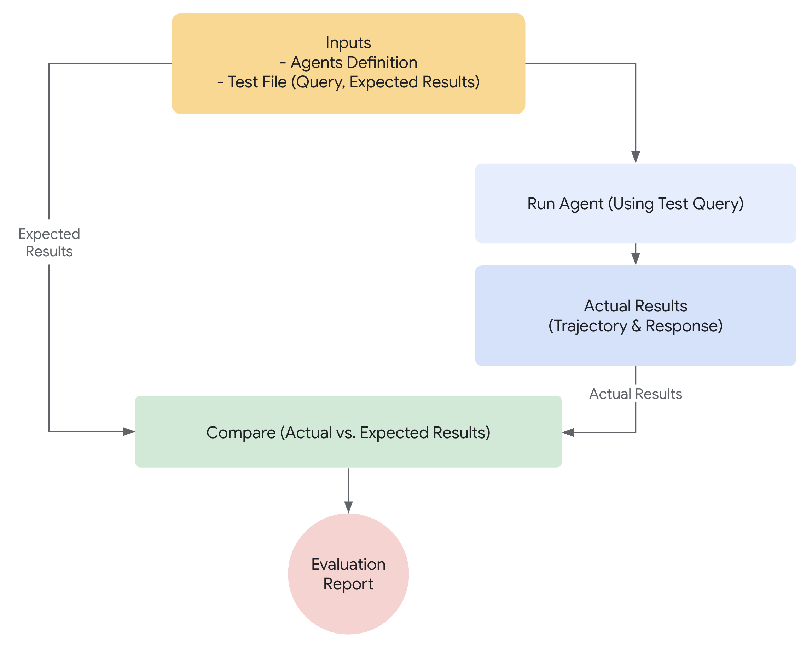

なぜエージェントを評価するのか¶
従来のソフトウェア開発では、単体テストと統合テストによって、コードが期待通りに機能し、変更を通じて安定しているという信頼性が得られます。これらのテストは明確な「合格/不合格」のシグナルを提供し、さらなる開発の指針となります。しかし、LLMエージェントは、従来のテストアプローチでは不十分なレベルの変動性を持ち込みます。
モデルの確率的な性質のため、決定論的な「合格/不合格」のアサーションは、エージェントのパフォーマンス評価にはしばしば不適切です。代わりに、最終的な出力とエージェントの軌跡（trajectory） - 解に到達するために取られた一連のステップ - の両方について、定性的な評価が必要です。これには、エージェントの決定の質、その推論プロセス、そして最終結果の評価が含まれます。
これは設定に多くの余分な作業が必要に思えるかもしれませんが、評価を自動化するための投資はすぐに元が取れます。プロトタイプを超えて前進するつもりなら、これは強く推奨されるベストプラクティスです。

エージェント評価の準備¶
エージェント評価を自動化する前に、明確な目的と成功基準を定義します：
- 成功の定義： あなたのエージェントにとって、成功した結果とは何か？
- 重要なタスクの特定： あなたのエージェントが達成しなければならない本質的なタスクは何か？
- 関連するメトリクスの選択： パフォーマンスを測定するために追跡するメトリクスは何か？
これらの考慮事項は、評価シナリオの作成を導き、実世界のデプロイメントにおけるエージェントの振る舞いを効果的に監視することを可能にします。
何を評価するか？¶
概念実証（PoC）と本番環境対応のAIエージェントとの間のギャップを埋めるためには、堅牢で自動化された評価フレームワークが不可欠です。主に最終的な出力に焦点を当てる生成モデルの評価とは異なり、エージェントの評価には、意思決定プロセスのより深い理解が必要です。エージェントの評価は、2つのコンポーネントに分けることができます：
- 軌跡とツール使用の評価： エージェントが解決策に到達するために取るステップ（ツールの選択、戦略、アプローチの効率性など）を分析します。
- 最終応答の評価： エージェントの最終的な出力の品質、関連性、正確性を評価します。
軌跡とは、エージェントがユーザーに応答を返すまでに行った一連のステップのリストにすぎません。それを、エージェントが取るべきだと我々が期待するステップのリストと比較することができます。
軌跡とツール使用の評価¶
ユーザーに応答する前に、エージェントは通常、一連のアクションを実行します。これを「軌跡（trajectory）」と呼びます。用語を明確にするためにセッション履歴とユーザー入力を比較したり、ポリシー文書を検索したり、知識ベースを検索したり、チケットを保存するためにAPIを呼び出したりするかもしれません。我々はこの一連のアクションを「軌跡」と呼びます。エージェントのパフォーマンスを評価するには、その実際の軌跡を期待される、あるいは理想的な軌跡と比較する必要があります。この比較により、エージェントのプロセスのエラーや非効率性が明らかになることがあります。期待される軌跡は正解データ（ground truth）、つまりエージェントが取るべきだと我々が予測するステップのリストを表します。
例：
// 軌跡の評価では以下を比較します
expected_steps = ["determine_intent", "use_tool", "review_results", "report_generation"]
actual_steps = ["determine_intent", "use_tool", "review_results", "report_generation"]```
正解データに基づく軌跡評価には、いくつか種類があります：
1. **完全一致（Exact match）：** 理想的な軌跡との完全な一致を要求します。
2. **順序一致（In-order match）：** 正しいアクションが正しい順序であることを要求し、余分なアクションを許容します。
3. **順序不問一致（Any-order match）：** 正しいアクションが任意の順序であることを要求し、余分なアクションを許容します。
4. **適合率（Precision）：** 予測されたアクションの関連性/正確性を測定します。
5. **再現率（Recall）：** 予測に不可欠なアクションがどれだけ含まれているかを測定します。
6. **単一ツール使用（Single-tool use）：** 特定のアクションが含まれているかを確認します。
適切な評価メトリクスを選択するかは、エージェントの特定の要件と目標に依存します。例えば、リスクの高いシナリオでは完全一致が重要になるかもしれませんが、より柔軟な状況では順序一致や順序不問一致で十分な場合があります。
## ADKでの評価の仕組み
ADKは、事前定義されたデータセットと評価基準に対してエージェントのパフォーマンスを評価するための2つの方法を提供します。これらは概念的には似ていますが、処理できるデータの量が異なり、それによって通常、それぞれに適したユースケースが決まります。
### 最初のアプローチ：テストファイルの使用
このアプローチでは、それぞれが単一の単純なエージェントとモデルの相互作用（セッション）を表す個別のテストファイルを作成します。これは、エージェントの開発が活発な時期に最も効果的で、一種の単体テストとして機能します。これらのテストは迅速な実行のために設計されており、単純なセッションの複雑さに焦点を当てるべきです。各テストファイルには単一のセッションが含まれ、そのセッションは複数の**ターン（turn）**で構成される場合があります。ターンは、ユーザーとエージェント間の単一の対話を表します。各ターンには以下が含まれます：
- `User Content`: ユーザーが発行したクエリ。
- `Expected Intermediate Tool Use Trajectory`: ユーザーのクエリに正しく応答するために、エージェントが行うと期待されるツール呼び出し。
- `Expected Intermediate Agent Responses`: エージェント（またはサブエージェント）が最終的な回答を生成する過程で生成する自然言語の応答。これらの自然言語応答は、通常、ルートエージェントが目標を達成するためにサブエージェントに依存するマルチエージェントシステムの成果物です。これらの途中応答は、エンドユーザーにとっては興味がないかもしれませんが、システムの開発者/所有者にとっては、エージェントが最終応答を生成するために正しいパスをたどったという確信を与えてくれるため、非常に重要です。
- `Final Response`: エージェントからの期待される最終応答。
ファイルには任意の名前を付けることができます（例：`evaluation.test.json`）。フレームワークは`.test.json`という接尾辞のみをチェックし、ファイル名の前の部分に制約はありません。以下はいくつかの例を含むテストファイルです：
注意：テストファイルは現在、公式のPydanticデータモデルに基づいています。2つの主要なスキーマファイルは
[Eval Set](https://github.com/google/adk-python/blob/main/src/google/adk/evaluation/eval_set.py) と
[Eval Case](https://github.com/google/adk-python/blob/main/src/google/adk/evaluation/eval_case.py) です。
```json
# このドキュメントを読みやすくするため、一部のフィールドは削除されています。
{
"eval_set_id": "home_automation_agent_light_on_off_set",
"name": "",
"description": "これは、エージェントの`x`の振る舞いを単体テストするために使用される評価セットです。",
"eval_cases": [
{
"eval_id": "eval_case_id",
"conversation": [
{
"invocation_id": "b7982664-0ab6-47cc-ab13-326656afdf75", # 呼び出しの一意な識別子。
"user_content": { # この呼び出しでユーザーが提供したコンテンツ。これがクエリです。
"parts": [
{
"text": "寝室のdevice_2をオフにして。"
}
],
"role": "user"
},
"final_response": { # ベンチマークの参照として機能するエージェントからの最終応答。
"parts": [
{
"text": "device_2のステータスをオフに設定しました。"
}
],
"role": "model"
},
"intermediate_data": {
"tool_uses": [ # 時系列順のツール使用の軌跡。
{
"args": {
"location": "Bedroom",
"device_id": "device_2",
"status": "OFF"
},
"name": "set_device_info"
}
],
"intermediate_responses": [] # 任意の中間サブエージェント応答。
},
}
],
"session_input": { # 初期のセッション入力。
"app_name": "home_automation_agent",
"user_id": "test_user",
"state": {}
},
}
],
}```
テストファイルはフォルダにまとめることができます。オプションで、フォルダに評価基準を指定する`test_config.json`ファイルを含めることもできます。
#### Pydanticスキーマに基づかないテストファイルの移行方法は？
注意：もしあなたのテストファイルが[EvalSet](https://github.com/google/adk-python/blob/main/src/google/adk/evaluation/eval_set.py)スキーマファイルに準拠していない場合、このセクションはあなたに関連します。
既存の`*.test.json`ファイルをPydanticベースのスキーマに移行するには、`AgentEvaluator.migrate_eval_data_to_new_schema`を使用してください。
このユーティリティは、現在のテストデータファイルとオプションの初期セッションファイルを受け取り、新しい形式でシリアライズされたデータを持つ単一の出力jsonファイルを生成します。新しいスキーマはよりまとまりがあるため、古いテストデータファイルと初期セッションファイルは両方とも無視（または削除）できます。
### 2番目のアプローチ：Evalsetファイルの使用
evalsetアプローチは、エージェントとモデルの相互作用を評価するために「evalset」と呼ばれる専用のデータセットを利用します。テストファイルと同様に、evalsetには相互作用の例が含まれています。ただし、evalsetは複数の、潜在的に長いセッションを含むことができるため、複雑な複数ターンの会話をシミュレートするのに理想的です。複雑なセッションを表現できるため、evalsetは統合テストに適しています。これらのテストは、その広範な性質のために、通常、単体テストよりも頻繁には実行されません。
evalsetファイルには、それぞれが個別のセッションを表す複数の「eval」が含まれています。各evalは1つ以上の「ターン」で構成され、ユーザーのクエリ、期待されるツール使用、期待される中間エージェント応答、および参照応答が含まれます。これらのフィールドは、テストファイルアプローチと同じ意味を持ちます。各evalは一意の名前で識別されます。さらに、各evalには関連する初期セッション状態が含まれます。
evalsetを手動で作成するのは複雑になる可能性があるため、関連するセッションをキャプチャし、それらをevalset内のevalに簡単に変換するのに役立つUIツールが提供されています。評価にWeb UIを使用する方法については、以下で詳しく学んでください。以下は2つのセッションを含むevalsetの例です。
注意：eval setファイルは現在、公式のPydanticデータモデルに基づいています。2つの主要なスキーマファイルは
[Eval Set](https://github.com/google/adk-python/blob/main/src/google/adk/evaluation/eval_set.py) と
[Eval Case](https://github.com/google/adk-python/blob/main/src/google/adk/evaluation/eval_case.py) です。
```json
# このドキュメントを読みやすくするため、一部のフィールドは削除されています。
{
"eval_set_id": "eval_set_example_with_multiple_sessions",
"name": "複数のセッションを持つ評価セット",
"description": "この評価セットは、評価セットが複数のセッションを持つことができることを示す例です。",
"eval_cases": [
{
"eval_id": "session_01",
"conversation": [
{
"invocation_id": "e-0067f6c4-ac27-4f24-81d7-3ab994c28768",
"user_content": {
"parts": [
{
"text": "何ができる？"
}
],
"role": "user"
},
"final_response": {
"parts": [
{
"text": "異なるサイズのサイコロを振ったり、数字が素数かどうかをチェックしたりできます。"
}
],
"role": null
},
"intermediate_data": {
"tool_uses": [],
"intermediate_responses": []
},
},
],
"session_input": {
"app_name": "hello_world",
"user_id": "user",
"state": {}
},
},
{
"eval_id": "session_02",
"conversation": [
{
"invocation_id": "e-92d34c6d-0a1b-452a-ba90-33af2838647a",
"user_content": {
"parts": [
{
"text": "19面のサイコロを振って"
}
],
"role": "user"
},
"final_response": {
"parts": [
{
"text": "17が出ました。"
}
],
"role": null
},
"intermediate_data": {
"tool_uses": [],
"intermediate_responses": []
},
},
{
"invocation_id": "e-bf8549a1-2a61-4ecc-a4ee-4efbbf25a8ea",
"user_content": {
"parts": [
{
"text": "10面のサイコロを2回振って、その後9が素数かどうかチェックして"
}
],
"role": "user"
},
"final_response": {
"parts": [
{
"text": "サイコロの目は4と7が出ました。9は素数ではありません。\n"
}
],
"role": null
},
"intermediate_data": {
"tool_uses": [
{
"id": "adk-1a3f5a01-1782-4530-949f-07cf53fc6f05",
"args": {
"sides": 10
},
"name": "roll_die"
},
{
"id": "adk-52fc3269-caaf-41c3-833d-511e454c7058",
"args": {
"sides": 10
},
"name": "roll_die"
},
{
"id": "adk-5274768e-9ec5-4915-b6cf-f5d7f0387056",
"args": {
"nums": [
9
]
},
"name": "check_prime"
}
],
"intermediate_responses": [
[
"data_processing_agent",
[
{
"text": "10面のサイコロを2回振りました。1回目は5、2回目は3です。\n"
}
]
]
]
},
}
],
"session_input": {
"app_name": "hello_world",
"user_id": "user",
"state": {}
},
}
],
}
Pydanticスキーマに基づかないeval setファイルの移行方法は？¶
注意：もしあなたのeval setファイルがEvalSetスキーマファイルに準拠していない場合、このセクションはあなたに関連します。
eval setデータを誰が管理しているかに基づいて、2つのルートがあります：
-
ADK UIによって管理されているeval setデータ ADK UIを使用してEval setデータを管理している場合、あなたからのアクションは不要です。
-
手動で開発・管理され、ADK eval Cliで使用されるeval setデータ 移行ツールは現在開発中です。それまでは、ADK eval cliコマンドは古い形式のデータを引き続きサポートします。
評価基準¶
評価基準は、evalsetに対してエージェントのパフォーマンスがどのように測定されるかを定義します。以下のメトリクスがサポートされています：
tool_trajectory_avg_score: このメトリクスは、評価中のエージェントの実際のツール使用を、expected_tool_useフィールドで定義された期待されるツール使用と比較します。一致する各ツール使用ステップは1のスコアを受け取り、不一致は0のスコアを受け取ります。最終スコアはこれらの一致の平均であり、ツール使用の軌跡の正確さを表します。response_match_score: このメトリクスは、エージェントの最終的な自然言語応答を、referenceフィールドに保存されている期待される最終応答と比較します。2つの応答の類似度を計算するために、ROUGEメトリクスを使用します。
評価基準が提供されない場合、以下のデフォルト設定が使用されます：
tool_trajectory_avg_score: デフォルトは1.0で、ツール使用の軌跡で100%の一致を要求します。response_match_score: デフォルトは0.8で、エージェントの自然言語応答にわずかな誤差の余地を許容します。
以下は、カスタム評価基準を指定するtest_config.jsonファイルの例です：
ADKで評価を実行する方法¶
開発者は、以下の方法でADKを使用してエージェントを評価できます：
- WebベースのUI（
adk web）： Webベースのインターフェースを通じて対話的にエージェントを評価します。 - プログラム的に（
pytest）：pytestとテストファイルを使用して、評価をテストパイプラインに統合します。 - コマンドラインインターフェース（
adk eval）： 既存の評価セットファイルに対して、コマンドラインから直接評価を実行します。
1. adk web - Web UI経由で評価を実行¶
Web UIは、エージェントを対話的に評価し、評価データセットを生成する方法を提供します。
Web UI経由で評価を実行する手順：
bash adk web samples_for_testingを実行してWebサーバーを起動します。- Webインターフェースで：
- エージェントを選択します（例：
hello_world）。 - エージェントと対話し、テストケースとして保存したいセッションを作成します。
- インターフェースの右側にある「Evalタブ」をクリックします。
- 既存の評価セットがある場合はそれを選択するか、「新しい評価セットを作成」ボタンをクリックして新しいものを作成します。評価セットに文脈に合った名前を付けます。新しく作成された評価セットを選択します。
- 「現在のセッションを追加」をクリックして、現在のセッションを評価セットファイル内のevalとして保存します。このevalの名前を尋ねられるので、これも文脈に合った名前を付けます。
- 作成されると、新しく作成されたevalが評価セットファイル内の利用可能なevalのリストに表示されます。すべてを実行するか、特定のものを選択して評価を実行できます。
- 各evalのステータスがUIに表示されます。
- エージェントを選択します（例：
2. pytest - プログラム的にテストを実行¶
pytestを使用して、統合テストの一部としてテストファイルを実行することもできます。
コマンド例¶
テストコード例¶
以下は、単一のテストファイルを実行するpytestのテストケースの例です：
from google.adk.evaluation.agent_evaluator import AgentEvaluator
def test_with_single_test_file():
"""セッションファイルを介してエージェントの基本的な能力をテストする。"""
AgentEvaluator.evaluate(
agent_module="home_automation_agent",
eval_dataset_file_path_or_dir="tests/integration/fixture/home_automation_agent/simple_test.test.json",
)
このアプローチにより、エージェント評価をCI/CDパイプラインやより大きなテストスイートに統合できます。テストの初期セッション状態を指定したい場合は、セッションの詳細をファイルに保存し、それをAgentEvaluator.evaluateメソッドに渡すことで可能です。
3. adk eval - CLI経由で評価を実行¶
コマンドラインインターフェース（CLI）を通じて、eval setファイルの評価を実行することもできます。これはUIで実行されるのと同じ評価を実行しますが、自動化に役立ちます。つまり、このコマンドを通常のビルド生成および検証プロセスの一部として追加できます。
コマンドは以下の通りです：
adk eval \
<AGENT_MODULE_FILE_PATH> \
<EVAL_SET_FILE_PATH> \
[--config_file_path=<PATH_TO_TEST_JSON_CONFIG_FILE>] \
[--print_detailed_results]
例：
adk eval \
samples_for_testing/hello_world \
samples_for_testing/hello_world/hello_world_eval_set_001.evalset.json
各コマンドライン引数の詳細は以下の通りです：
AGENT_MODULE_FILE_PATH: "agent"という名前のモジュールを含む__init__.pyファイルへのパス。"agent"モジュールにはroot_agentが含まれています。EVAL_SET_FILE_PATH: 評価ファイルへのパス。1つ以上のeval setファイルパスを指定できます。各ファイルについて、デフォルトではすべてのevalが実行されます。eval setから特定のevalのみを実行したい場合は、まずカンマ区切りのeval名のリストを作成し、それをコロン:で区切ってeval setファイル名の接尾辞として追加します。- 例：
sample_eval_set_file.json:eval_1,eval_2,eval_3これにより、sample_eval_set_file.jsonからeval_1、eval_2、eval_3のみが実行されます CONFIG_FILE_PATH: 設定ファイルへのパス。PRINT_DETAILED_RESULTS: コンソールに詳細な結果を出力します。